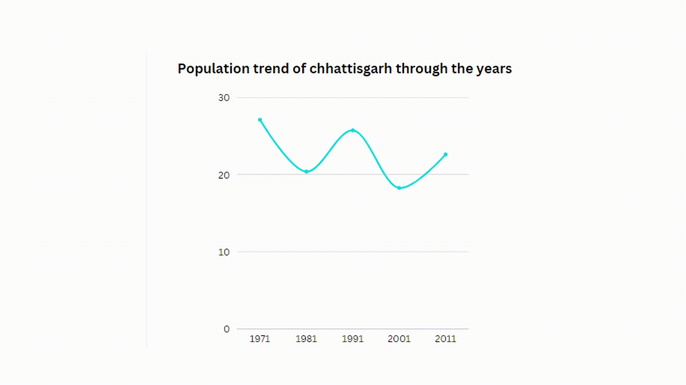

1.Religious rate of Chhattisgarh
2.Population trend of Chhattisgarh over the years

Chhattisgarh is the 17th most populous state of India and has a diverse population of
many religions & communities. At the census 2011, out of 2.55 Crore population, around
2.38 crores (93.23%) have returned themselves as followers of Hindu religion, 52 lakhs
(2.02%) as Muslims or the followers of Islam, 4.90 Lakhs (1.92%) as Christians. In addition
0.09% Stated as no religion & 2.73% are other religions.

According to Census 2011 data, Chhattisgarh has a population of 2.56 million people, up from 2.08 million in 2001. According to the 2011 census, Chhattisgarh's total population is 25,545,198, with male and female populations of 12,832,895 and 12,712,303, respectively. Thus the population of Chhattisgarh forms 2.11 percent of India in 2011.